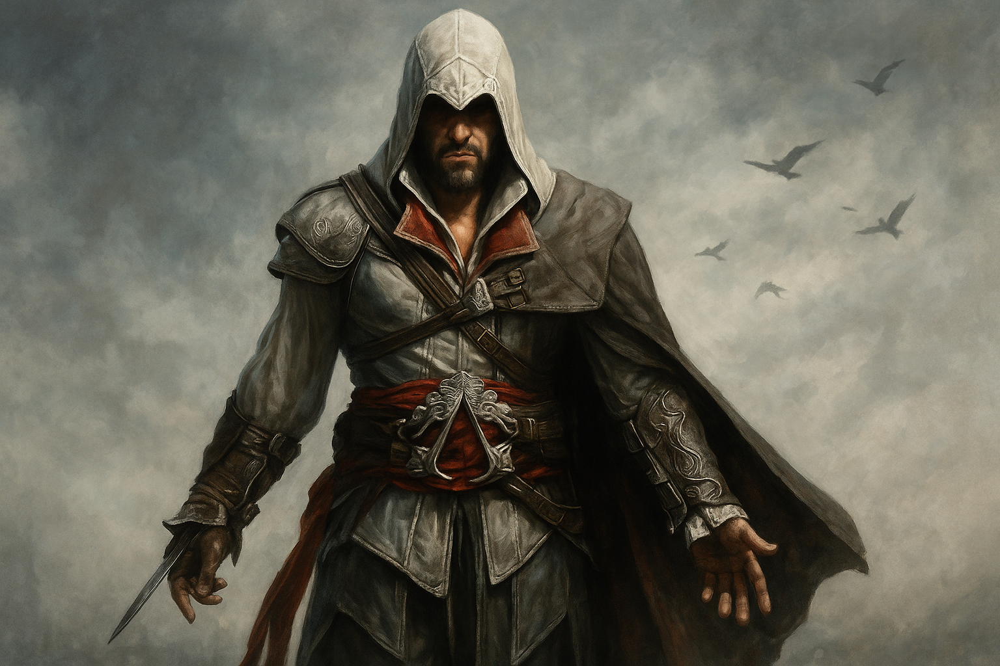
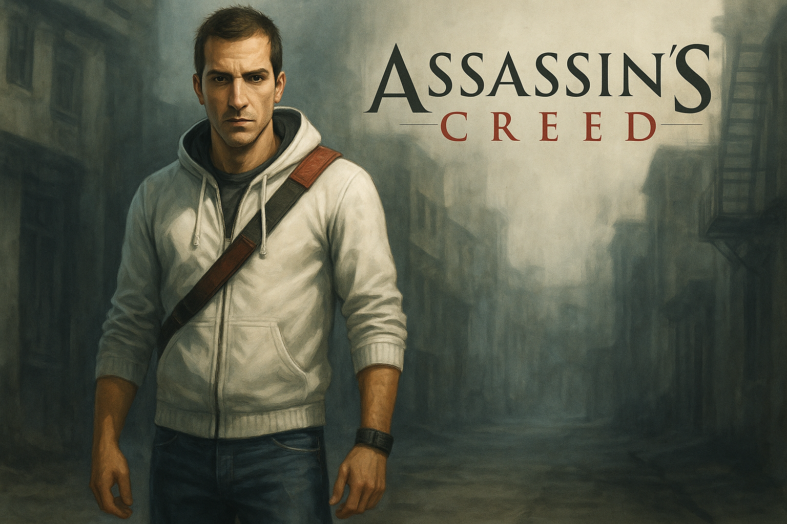
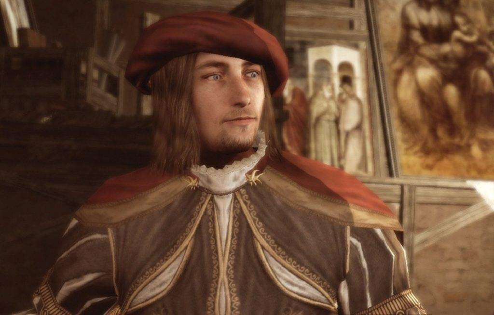

The Rise of Ezio
Enter the Italian Renaissance as Ezio Auditore da Firenze, a young nobleman turned Assassin after tragedy strikes his family. Assassin's Creed II refined every aspect of its predecessor, offering a deeper story, new gameplay mechanics, and memorable cities like Florence and Venice. It marked the beginning of one of gaming’s most iconic heroes.
Core Features
Weapon Variety
From dual hidden blades to smoke bombs, new tools expand your strategy.
Renaissance Art & Design
Explore beautifully recreated cities like Florence, Venice, and Tuscany.
Cryptic Truths
Uncover glyph puzzles and secret messages left behind by ancient Assassins.
Notable Characters

Ezio Auditore

Desmond Miles

Leonardo da Vinci
Game Gallery


Join the Renaissance
Discover secrets, master your skills, and become the legend of Florence and Venice.
Play Now